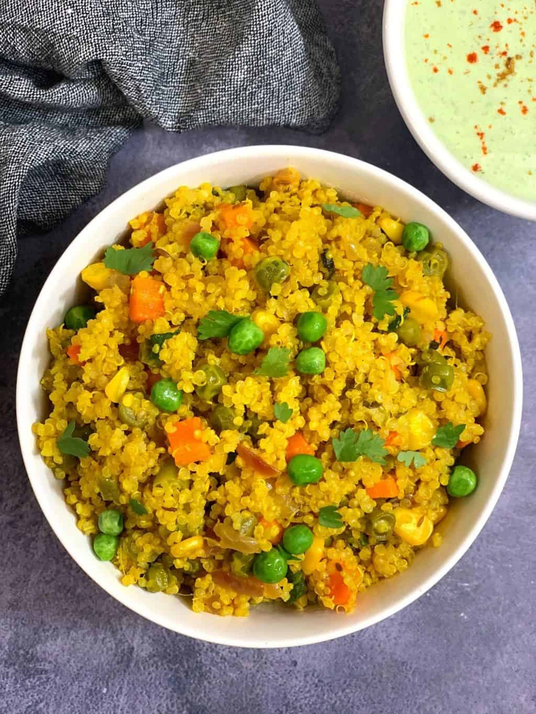

Quinoa Vegetable Pulao is a delightful and nutritious variation of the traditional Indian rice dish. It features quinoa, a protein-rich grain, cooked with a medley of colorful vegetables and aromatic spices.
Ingredients:
- 1 cup quinoa
- 1 cup mixed vegetables (carrots, peas, bell peppers, etc.), chopped
- 1 onion, thinly sliced
- 2 cloves of garlic, minced
- 1 teaspoon cumin seeds
- 1 teaspoon turmeric powder
- 1 teaspoon garam masala
- Salt to taste
- 2 tablespoons oil
- Fresh coriander leaves for garnish
Instructions:
- Rinse the quinoa under running water to remove any bitterness.
- Heat oil in a pan and add cumin seeds. Let them splutter.
- Add sliced onions and minced garlic. Sauté until the onions turn translucent.
- Add the mixed vegetables, turmeric powder, garam masala, and salt. Stir-fry for a few minutes.
- Add the rinsed quinoa and mix well.
- Add 2 cups of water and bring it to a boil. Reduce the heat, cover the pan, and let it simmer for about 15-20 minutes or until the quinoa is cooked and the water is absorbed.
- Fluff the quinoa with a fork and garnish with fresh coriander leaves. Serve hot.
Return to Top
Return to Home Page